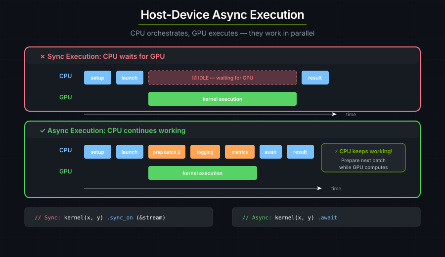
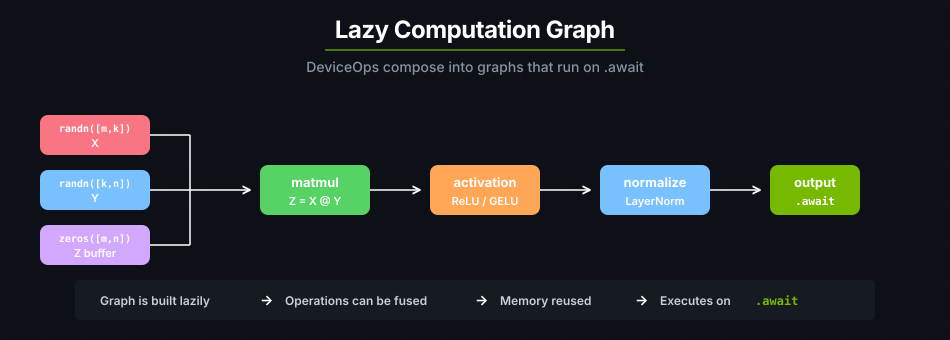

Device Operations#
DeviceOp describes GPU work on the host. Tensor constructors, kernel
launchers, and memory copies return operations that you can compose with
.then(), .shared(), zip!, and unzip. Run the resulting graph with
.sync() or .await, or capture it for replay with .graph().
The DeviceOp Model#
Your Rust code runs on the CPU (the host) and schedules work on the GPU (the device). A DeviceOp is how you express that scheduling: the host constructs and composes operations, the device executes them in parallel when the runtime asks it to.

A DeviceOp is a lazy description of GPU work — nothing runs until you say so:
let z = api::zeros(&[64, 64]); // DeviceOp<Output=Tensor<f32>>. No GPU work yet.
let result = z.await?; // NOW it executes.
Every DeviceOp implements IntoFuture, so every operation is awaitable:
pub trait DeviceOp: Send + Sized + IntoFuture
where Self::Output: Send { /* ... */ }
When you .await, the conversion goes through into_future() → schedule() → DeviceFuture → first poll → execute() → GPU work. The full sequence:
Your Code Tokio Runtime cuTile Rust GPU | | | | .await ---------------> into_future() | | | (immediate) | | | | | | | | -------------------> schedule() | | | DevicePolicy | | | | | | | <------------------- DeviceFuture | | | | | | first poll() ---------------> execute() | | | | | | | | ----------------> GPU WORK! | | | | | subsequent polls <-- - - - - -|- - - - - - -->| checking... | | | | | | | | Returns <-------------- Ready! <------------------|------------------+
execute(), not at .await!
GPU work starts at execute(), which fires during the first poll — not at .await itself. .await is cheap; the DeviceFuture is built immediately at into_future(), and actual submission to the GPU happens when the runtime polls.
Calling .sync() after every kernel leaves gaps while the CPU waits for
completion and submits the next launch:
CPU: [launch] [wait......] [launch] [wait......] [launch] [wait......]
GPU: [kernel████] [kernel████] [kernel████]
↑ ↑
idle gap idle gap
These gaps can dominate inference when kernels take only microseconds. A 22-layer transformer with 6 kernels per layer has 132 sync gaps per token. Compose the operations and synchronize once to eliminate those gaps:
let result = rms_norm(out1, hidden.clone(), weight.clone(), eps)
.first()
.unpartition()
.shared();
let q = matvec(out2, result.clone(), wq.clone())
.first()
.unpartition()
.shared();
let output = q.sync_on(&stream)?;
CPU: [build graph...] [launch all] [wait]
GPU: [norm████][mv████][add████]
no gaps — work is pipelined
cuTile offers three execution modes for running a constructed DeviceOp:
Synchronous — .sync() and .sync_on(&stream) block the thread until the result is ready. Best for scripts, debugging, and learning.
kernel(args...).sync()?; // default device, default stream policy
kernel(args...).sync_on(&stream)?; // explicit stream
Asynchronous — .await is non-blocking in an async context. Composes lazily for overlap.
let result = kernel(args...).await?;
let result = step1(args)
.then(|out| step2(out))
.then(|out| step3(out))
.await?;
CUDA graph — .graph() / .graph_on(stream.clone()) captures a composed DeviceOp into a reusable CudaGraph<T>. Best for hot paths that run the same pipeline many times. See CUDA Graphs below for the capture/replay pattern.
Composing DeviceOps#
DeviceOps compose into computation graphs using four combinators: .then(), zip!, unzip, and .shared(). Graphs are constructed lazily and evaluated as a unit, which preserves ordering, avoids duplicate work through sharing, and lets independent work overlap.

.then() chains operations sequentially — the output of one feeds the next. Chained ops share a stream, so ordering is strict.
let result = matmul(z, x, y)
.then(|(z, _x, _y)| activation(z))
.then(|(z,)| normalize(z));
let output = result.await?;
zip! combines multiple independent DeviceOps into a single tuple-valued one (fan-in). unzip is the inverse: splits a tuple-producing op into independent branches (fan-out).
zip! (fan-in) unzip (fan-out)
op_a ─┐ ┌── branch_a
├─ zip! ─── (a, b) (a, b) ── unzip ──┤
op_b ─┘ └── branch_b
When you unzip, the upstream operation runs at most once regardless of how many branches consume it. An internal shared gate executes it on the first branch to poll and caches the results for the rest:
let (z, x, y) = zip!(z_op, x_op, y_op)
.then(my_kernel)
.unzip();
let output = z.unpartition().to_host_vec().sync()?; // kernel runs once
.shared() converts any DeviceOp into a Clone-able SharedDeviceOp<T>. All clones share one Arc of the result; the underlying op executes once. Use it when many downstream kernels need the same input.
let x = api::ones(&[32, 32]).shared();
let a = kernel_a(x.clone()).sync()?; // x executes here (once)
let b = kernel_b(x.clone()).sync()?; // Uses the cached Arc
let c = kernel_c(x).sync()?; // Also uses the cached result
Diamond (fan-out then fan-in) and broadcast are two common composition patterns:
Diamond (fan-out then fan-in):
op_a ─┐ ┌─ transform_a ─┐
├── zip! ── unzip ├── zip! ── result
op_b ─┘ └─ transform_b ─┘
Broadcast (.shared() into parallel kernels):
┌── kernel_a ── result_a
x.shared() ──────┤
├── kernel_b ── result_b
└── kernel_c ── result_c
The execute-once mechanism assumes sequential polling from a single thread, which is the normal mode for cuda-async. Polling both sides of an unzip from different OS threads is unsafe (the gate uses a non-atomic check-then-act). Device contexts are thread-local, so the common triggering patterns fail earlier; still, avoid designs that fan out across threads.
Streams and Scheduling#
A CUDA stream is an ordered queue of GPU work. Operations on the same stream execute in submission order; operations on different streams may overlap.
By default, cuTile distributes operations across a pool of 4 streams using a round-robin policy, so independent operations land on different streams and can overlap:
┌─────────────────────────────────────────┐
Your Code │ GPU (4-stream pool) │
───────────── │ │
│ Stream 0: ████████ │
op_a.await ──────────►│ Stream 1: ████████ │
op_b.await ──────────►│ Stream 2: ████████ │
op_c.await ──────────►│ Stream 3: ████████ │
op_d.await ──────────►│ Stream 0: ████████ │
op_e.await ──────────►│ │
└─────────────────────────────────────────┘
Operations serialize in four cases: wrap-around onto the same stream (every 4th op in the default pool); chained with .then() (same stream); pinned to a single stream via .sync_on(&stream); or awaited sequentially (the host blocks between awaits, so the next op is submitted only after the previous completes).
Operations overlap when they land on different streams and are submitted before the host waits for either — typically via zip!, tokio::join!, or direct lazy composition that the async runtime polls concurrently.
Data dependencies are your responsibility. The round-robin policy does not track them. If operation B reads A's output, you must force ordering:
// Chain with .then() — same stream, automatic ordering
let result = create_tensor().then(|t| process(t)).await?;
// Await sequentially — host ensures ordering
let tensor = create_tensor().await?;
let result = process(tensor).await?;
// Pin to the same stream — CUDA guarantees ordering
let stream = device.new_stream()?;
let tensor = create_tensor().sync_on(&stream)?;
let result = process(tensor).sync_on(&stream)?;
The unsafe pattern — feeding A's output to B but submitting them as independent futures that land on different streams — can produce stale or partial reads:
// ⚠️ DANGER: op_b may start before op_a finishes if they land on different streams!
let future_a = op_a.into_future(); // Submitted to Stream 0
let future_b = op_b_reads_a_output.into_future(); // Submitted to Stream 1
let (a, b) = tokio::join!(future_a, future_b);
Execution method comparison#
Method |
Stream assignment |
Ordering guarantee |
Best for |
|---|---|---|---|
|
Shares parent's stream |
Strict: same stream |
Dependent operations |
|
Your explicit stream |
Strict if same stream |
Debugging, deterministic pipelines |
|
Policy picks (round-robin) |
None between calls |
Quick scripts |
|
Policy picks (round-robin) |
None between awaits |
Async code |
|
Single stream for the graph |
Strict within the graph |
Kernel launch patterns |
小訣竅
Sequential .await calls appear ordered from the host's perspective (each waits before the next starts), but the GPU work for each .await runs on whichever stream the policy assigns. For truly independent operations you want to overlap, use zip! or tokio::join!.
CUDA Graphs#
A CUDA graph captures a composed DeviceOp into a pre-compiled executable. Launching the executable submits the entire graph in a single driver call — no per-op dispatch overhead — and the same graph can be replayed many times. This matters for hot paths like per-token inference loops, where individual kernels run in microseconds and launch overhead dominates.
Two capture APIs, depending on how you want to express the pipeline:
// Combinator form — capture what a DeviceOp chain produces.
let graph = pipeline(input).graph_on(stream.clone())?;
// Scope form — imperative capture when you need &mut between steps.
let graph = CudaGraph::scope(&stream, |s| {
s.record(kernel_a((&mut out_a).partition([32]), x.clone()))?;
s.record(kernel_b((&mut out_b).partition([32]), x))?;
Ok(())
})?;
Once captured, replay with graph.launch(), which returns a DeviceOp you can sync, await, or compose further. For parameterized replay — the common "change one input per step" case — graph.update(new_op) rewrites the graph's inputs in place without re-instantiating:
for token in tokens {
graph.update(api::memcpy(&mut model.input, &token))?;
graph.launch().sync_on(&stream)?; // no per-op dispatch
}
Only operations that implement the GraphNode trait can be recorded: kernel launches and memcpy. Allocation operations (api::zeros, api::ones, etc.) are not graph-safe — allocate outside the capture closure and pass the tensors in. Inside a scope body, calling .sync_on(...), .sync(), or .await on any DeviceOp returns a DeviceError: the execution lock rejects nested execution during capture.
See Tutorial 10: CUDA Graphs for a walkthrough and Host API: CUDA Graph Integration for the full API reference.
Passing tensors and reading results#
Kernel &Tensor params accept three input forms, and &mut Tensor params accept two partition forms. You get back the same type you put in.
Read-only inputs (&Tensor):
// Owned — single use, no Arc overhead.
let x: Tensor<f32> = ones(&[32, 32]).sync_on(&stream)?;
let (_, x) = kernel(out, x).sync_on(&stream)?;
// Shared — use the same tensor in multiple kernels.
let x: Arc<Tensor<f32>> = ones(&[32, 32]).sync_on(&stream)?.into();
let z1 = kernel1(out1, x.clone()).sync_on(&stream)?;
let z2 = kernel2(out2, x.clone()).sync_on(&stream)?;
// Borrowed — no allocation, borrow checker enforces lifetime.
let x: Tensor<f32> = ones(&[32, 32]).sync_on(&stream)?;
let _ = kernel(out, &x).sync_on(&stream)?;
Mutable outputs (&mut Tensor):
// Owned partition — must unpartition() to get the tensor back.
let z = zeros(&[32, 32]).sync_on(&stream)?.partition([4, 4]);
let (z, ..) = kernel(z, &x).sync_on(&stream)?;
let tensor = z.unpartition();
// Borrowed partition — writes in place, no unpartition() needed.
let mut z = zeros(&[32, 32]).sync_on(&stream)?;
let _ = kernel((&mut z).partition([4, 4]), &x).sync_on(&stream)?;
Borrowed inputs and borrowed partitions aren't 'static, so tokio::spawn rejects them at compile time — use Arc and owned partitions for spawned tasks. See the Host API: Ownership Model for the full ownership model.
Host readback is itself a DeviceOp. Constructing it is lazy; sync or await the readback op before using the host data:
// Bad: constructs a host copy operation, but never executes it.
let z = kernel(x, y).first().sync_on(&stream)?;
let data_op = z.to_host_vec();
// Good: execute the copy before reading the Vec.
let z = kernel(x, y).first().sync_on(&stream)?;
let data = z.to_host_vec().sync_on(&stream)?;
Runtime Notes#
Execution lock. cuTile enforces "only one DeviceOp executes per thread at a time." Nesting .sync_on(...), .sync(), or .await inside a .then(...) closure or a CudaGraph::scope body returns a DeviceError. The lock exists to prevent cross-stream data races: a nested sync_on(&other_stream) inside a .then() handler would submit work to a second stream without ordering it against the first. For the rare legitimate case, use unsafe fn then_unchecked.
Default device. The device each DeviceOp lands on is thread-local. set_default_device(id) changes it for the current thread — the common pattern for one-thread-per-GPU worker pools. For per-op routing without touching the thread default, get a policy with global_policy(id) or with_device_policy(id, |policy| ...) and call op.schedule(&policy)?.
Handles from other frameworks (cudarc, Candle, hand-rolled FFI) can be wrapped into a cuTile Device or Stream without transferring ownership via Device::borrow_raw / Stream::borrow_raw — see Interoperability.
Continue to Performance for optimization techniques. For the full DeviceOp API, see the Host API.